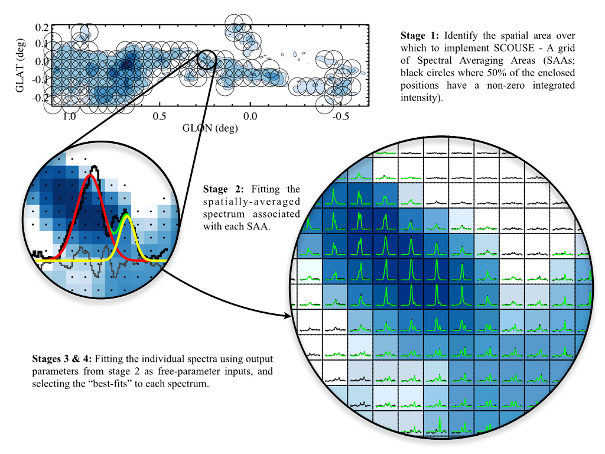

A brief introduction to scousepy¶
The method has been updated slightly from the original IDL version of the code. It is now more interactive than before which should hopefully speed things up a bit for the user. The method is broken down into six stages in total. Each stage is summarised below.
{kind=link}
Stage 1: defining the coverage¶
Here scousepy identifies the spatial area over which to fit the data. It
generates a grid of spectral averaging areas (SAAs). The user is required to
provide the width of the spectral averaging area. Extra refinement of spectral
averaging areas (i.e. for complex regions) can be controlled using the keyword
refine_grid.
Stage 2: fitting the spectral averaging areas¶
User-interactive fitting of the spatially averaged spectra output from stage 1.
scousepy makes use of the pyspeckit
package and is fully interactive.
Stage 3: automated fitting¶
Non user-interactive fitting of individual spectra contained within all SAAs.
The user is required to input several tolerance levels to scousepy. Please
refer to Henshaw et al. 2016
for more details on each of these.
Stage 4: selecting the best fits¶
Here scousepy selects the best-fits that are output in stage 3.
Optional Stages¶
Unfortunately there is no one-size-fits-all method to selecting a best-fitting solution when multiple choices are available (stage 4). SCOUSE uses the Akaike Information Criterion, which weights the chi-squared value of a best-fitting solution according to the number of free-parameters.
While AIC does a good job of returning the best-fitting solutions, there are areas where the best-fitting solutions can be improved. As such the following stages are optional but highly recommended.
This part of the process has changed significantly from the original code. The user is now presented with several diagnostic plots (see below), selecting different regions will display the corresponding spectra, allowing the user to check the fit quality.
Depending on the data a user may wish to perform a few iterations of Stages 5-6.
Stage 5: checking the best-fitting solutions¶
Checking the fits. Here the user is required to check the best-fitting solutions to the spectra. This stage is now fully interactive. The user is first presented with several diagnostic plots namely: rms, residstd, redchi2, ncomps, aic, chi2. These can be used to assess the quality of fits throughout the map. Clicking on a particular region will show the spectra associated with that location. The user can then select spectra for closer inspection or refitting as required.
Stage 6: re-analysing the identified spectra¶
In this stage the user is required to either select an alternative solution or re-fit completely the spectra identified in stage 5.